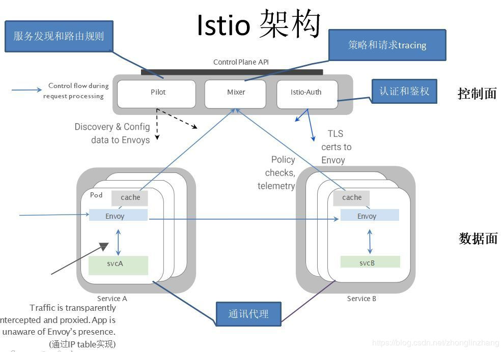
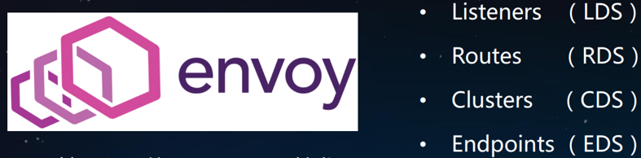
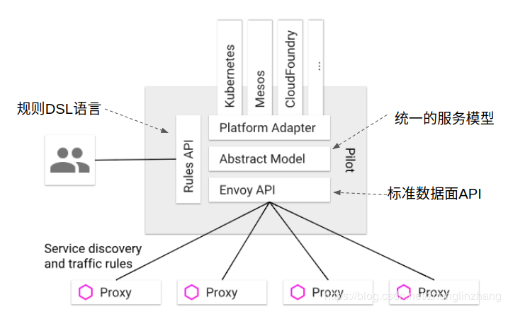

# Istio 架构组件简介
官网: https://istio.io/
官网中文: https://istio.io/zh/
Github: https://github.com/istio/istio
中文社区: https://istio.cn/
# 简介
Istio 是一个由谷歌、IBM 与 Lyft 共同开发的开源项目，旨在提供一种统一化的微服务连接、安全保障、管理与监控方式。具体来说，Istio 是一个开源服务网格平台，它确保微服务在处理故障时以指定的方式相互连接。
# 架构
Istio 服务网格逻辑上分为数据平面和控制平面。
- 数据平面由一组以 sidecar 方式部署的智能代理（Envoy）组成。这些代理可以调节和控制微服务及 Mixer 之间所有的网络通信。
- 控制平面负责管理和配置代理来路由流量。此外控制平面配置 Mixer 以实施策略和收集遥测数据。

# Envoy

Listeners: 设置监听IP:Port, 到达sidecar的请求都会到这里来.
Routes: 根据route, 如: - match: {prefix:”/”} route: {cluster: service_envoy}选择 Cluster.
Clusters: 找到相应的Cluster name: service_envoy, 定义了一些轮询规则等.
Endpoints: 指定路由转发到哪里, IP:Port
Envoy 是经过 CNCF (Cloud Native Computing Foundation, 云原生计算基金会 (是一个开源软件基金会，它致力于云原生（Cloud Native）技术的普及和可持续发展。) 非常成功毕业的 sidecar 软件.
从 CNCF 毕业的软件还有 Prometheus, Kubernetes.
Istio 使用 Envoy 代理的扩展版本，Envoy 是以 C++ 开发的高性能代理，用于调解服务网格中所有服务的所有入站和出站流量。Envoy 的许多内置功能被 istio 发扬光大，例如：
Envoy 被部署为 sidecar，和对应服务在同一个 Kubernetes pod 中。这允许 Istio 将大量关于流量行为的信号作为属性提取出来，而这些属性又可以在 Mixer 中用于执行策略决策，并发送给监控系统，以提供整个网格行为的信息。
Sidecar 代理模型还可以将 Istio 的功能添加到现有部署中，而无需重新构建或重写代码。可以阅读更多来了解为什么我们在设计目标中选择这种方式。
- 动态服务发现
- 负载均衡
- TLS 终止
- HTTP/2 & gRPC 代理
- 熔断器
- 健康检查、基于百分比流量拆分的灰度发布
- 故障注入
- 丰富的度量指标
# Mixer
Mixer 是一个独立于平台的组件，负责在服务网格上执行访问控制和使用策略，并从 Envoy 代理和其他服务收集遥测数据。代理提取请求级属性，发送到 Mixer 进行评估。有关属性提取和策略评估的更多信息，请参见 Mixer 配置。
Mixer 中包括一个灵活的插件模型，使其能够接入到各种主机环境和基础设施后端，从这些细节中抽象出 Envoy 代理和 Istio 管理的服务。
# Pilot
控制面中负责流量管理的组件为 Pilot
# 流量管理
Istio 维护了一个内部服务注册表 (service registry)，它包含在服务网格中运行的一组服务及其相应的服务 endpoints。Istio 使用服务注册表生成 Envoy 配置。
Istio 不提供服务发现，尽管大多数服务都是通过 Pilot adapter 自动加入到服务注册表里的，而且这反映了底层平台（Kubernetes、Consul、plain DNS）的已发现的服务。还有就是，可以使用 ServiceEntry 配置手动进行注册。
# Envoy
Istio 选择了开源的 Envoy 作为它的网络代理，envoy 是 2016 年用 c++ 的高性能的代理组件，用于管理所有服务的入口和出口流量.
envoy 内置了很多功能，像服务发现，负载均衡，多种协议的支持，断路器，流量分割，健康检查，模拟一些故障，还有监控指标等等.
envoy 会以 sidecar 的形式部署在每一个 POD 中负责完成 Istio 的核心功能，如果把 Istio 比作公司，envoy 就是这个公司的一些员工，所有的具体工作都是由 envoy 干的
# Pilot

控制面中负责流量管理的组件为 Pilot
Pilot 和 Envoy 组件有了 Istio 就可以运转起来了，其它组件可以不需要.
Pilot 好比是 envoy 的直接领导，顶头上司，告诉并协助 envoy 怎样工作，因为 envoy 跑在一个容器里的.
- Pilot 告诉 envoy 集群都有哪些服务，envoy 就可以做服务发现了.
- Pilot 根据用户配置的流量管理和服务信息转换成 envoy 能够识别的格式，然后分发给 envoy，告诉 envoy 哪些 POD 需要多少流量，envoy 就能做 A/B 测试，蓝绿部署.
- Pilot 告诉 envoy 多长时间算超时，应该重试几次.
Pilot 为 Envoy sidecar 提供服务发现功能，为智能路由（例如 A/B 测试、金丝雀部署等）和弹性（超时、重试、熔断器等）提供流量管理功能。它将控制流量行为的高级路由规则转换为特定于 Envoy 的配置，并在运行时将它们传播到 sidecar。
Pilot 将平台特定的服务发现机制抽象化并将其合成为符合 Envoy 数据平面 API 的任何 sidecar 都可以使用的标准格式。这种松散耦合使得 Istio 能够在多种环境下运行（例如，Kubernetes、Consul、Nomad），同时保持用于流量管理的相同操作界面。
- Platform Adapter: 平台适配器。针对多种集群管理平台实现的控制器，得到 API server 的 DNS 服务注册信息（即 service 名与 podIP 的对应表）、入口资源以及存储流量管理规则的第三方资源
- Abstract Model：维护了 envoy 中对 service 的规范表示。接收上层获取的 service 信息转化为规范模型
- Envoy API：下发服务发现、流量规则到 envoy 上
- Rules API：由运维人员管理。可通过 API 配置高级管理规则
# Mixer (独立组件)
两大功能：策略，遥测
策略：为整个集群执行访问控制，哪些用户可以访问哪些服务，还有一些策略的管理，像对一些服务的访问速度的限制等，比如服务 A 最多接受 100QPS，超过的就会被直接扔掉
遥测：数据的收集和汇报，从 envoy (proxy) 收集数据，收集的是服务之间流转的数据，收集的数据会汇报给其它对象，每个汇报的对象都有 Adapter (适配器) 转换汇报的数据为自己认识的格式，如 Prometheus.
可以不用 Mixer 也可以把 Istio 跑起来
# Galley
最初负责验证配置，Istio1.1 之后升级为 Istio 整个平面的配置管理中心，校验各种配置是否正确
# Citadel
安全相关的，为用户到服务，服务到服务之间提供安全的通信，可以让 http 服务无感知的升级成为 https 服务，还有服务的访问授权等.
# Istio 解决的问题
- 原来的单个应用拆分成多个微服务，它们之间相互调用才能完成微服务，组件 (服务模块) 越多，出错概率越大，就会非常难以排查.
- 用户请求出现问题: 1. 错误， 2. 慢响应
- 请求错误，得知道哪个步骤出错了，微服务之间哪些能调用成功哪些失败.
- 请求响应太慢，各个链路调用，耗时是多少，哪些并发执行哪些串行.
- 设置 timeout
- 设置重试机制
- 某些节点异常 (如 load 高)
# A/B 测试
- A/B 测试的基本思想是什么？
A/B 测试的基本思想包括：提供两个方案并行测试。不同方案之间只存在一个变量，排除其他干扰因素。以某种标准判定结果优劣，筛出最优方案。其中第二点，即单变量，需要重点关注。因为某种方案的优劣，不光与方案本身有关，也可能与方案所适配的环境密不可分。
所谓 A/B 测试，简单说来就是针对想调研的问题提供两种不同的备选解决方案（比如两个下单页面），然后让一部分用户使用方案 A，另一部分用户使用方案 B 像 LinkedIn 的升级迭代一样，最终通过数据观察对比确定最优方案。
- A/B 测试案例
在互联网产品开发过程中，我们经常面临多种方案的抉择。有些选择轻而易举，例如面向大众的偏理性产品，主色调定位蓝色最权威稳重而广为接受（比如百度、Facebook）；强调安全的服务，绿色是常规之选。但有些时候，备选方案模棱两可，甚至区别看起来无关紧要，例如某个按钮是用橙色还是红色，摆放的位置偏左还是偏右。面对这种情况，传统解决方式要么是根据设计师的审美来定，要么是一群人共同表决，要么由某个领导拍板决定。无论哪种方式，都不免受到个人主观因素的制约，未必代表的了广大用户在实际使用场景中的认知。“不识庐山真面目，只缘身在此山中。” 通常解决此类情况，最合理的办法之一，就是进行 A/B 测试（A/B Testing）。所谓 A/B 测试，简单说来就是针对想调研的问题提供两种不同的备选解决方案（比如两个下单页面），然后让一部分用户使用方案 A，另一部分用户使用方案 B，最终通过数据观察对比确定最优方案。在现实生活中，达尔文《物种起源》中提到的物竞天择原理，本质上就是在谈同一物种的不同变体经过外部环境测试后存留延续下的最优结果，也算是一种 A/B 测试。
- 团队使用 A/B 测试有什么好处？
在数据面前任何妄加揣测的评断都可能是不准确的。通过 A/B 测试，产品团队能够获悉哪些对激发用户活跃度有所帮助，哪些又徒劳无功（有时候后者显得更为重要，因为它能终结一场无意义的争吵，或是缩减许多不必要的消耗）。一次测试或许能带来良好的改善效果，但也绝非意味着提升空间已然消失。微软公司的测试经验表明，在他们做的所有测试中，有三分之一被验证为成功有效，剩下的三分之二平平无奇或压根就是失败的。谷歌在 2009 年做了 12000 多次测试，但其中只有 10％带来了业务变化。产品不息，测试不止。永远不要满足于当下的结果，因为世界上总有更好的解决方案